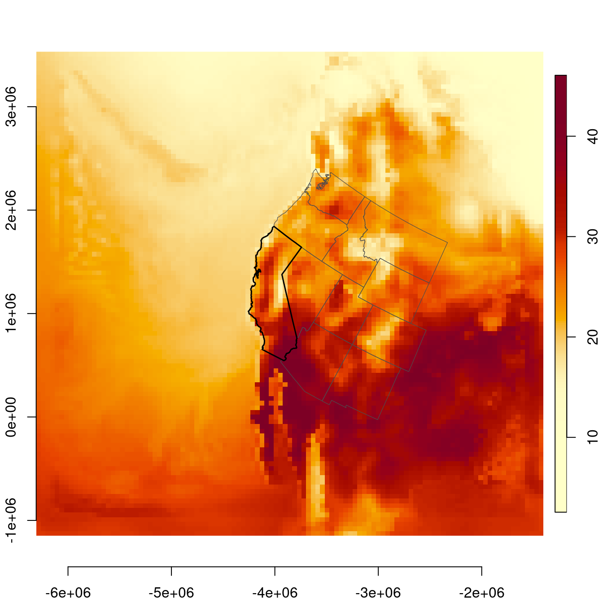
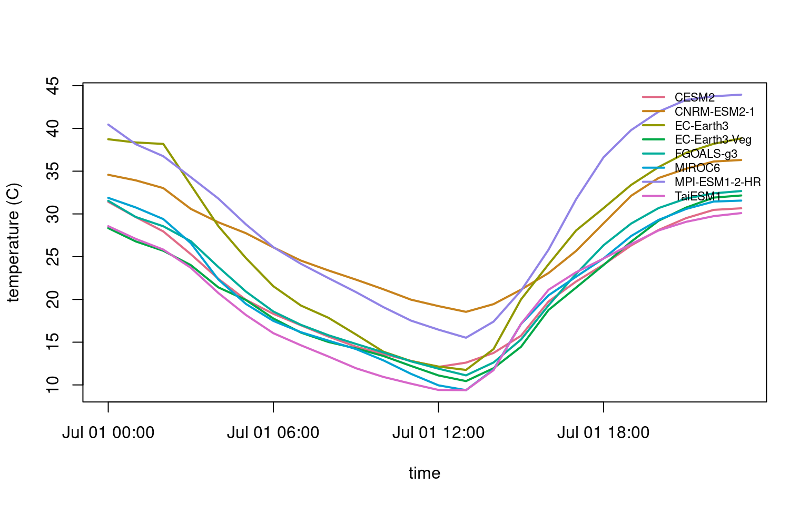

wrf <- cae_fetch_point(
variable = "t2",
model = "EC-Earth3",
scenario = "ssp370",
lon = -119.77,
lat = 36.75,
start_time = "2050-07-01T00:00:00",
end_time = "2050-07-07T23:00:00"
)
tasmax <- cae_fetch_point(
variable = "tasmax",
model = "EC-Earth3",
scenario = "ssp370",
lon = -119.77,
lat = 36.75,
timescale = "day",
resolution = "d03",
start_time = "2050-07-01",
end_time = "2050-07-07"
)
tasmin <- cae_fetch_point(
variable = "tasmin",
model = "EC-Earth3",
scenario = "ssp370",
lon = -119.77,
lat = 36.75,
timescale = "day",
resolution = "d03",
start_time = "2050-07-01",
end_time = "2050-07-07"
)Accessing Cal-Adapt Data in R
Purpose
This guide describes the main data access functions in caladaptaer. For the shortest path from installation to a time series, see Getting Started.
These functions fall into three groups:
- discovery (what data are available),
- fetching (reading grids and point time series into R), and
- coverage checks (confirming variable availability before larger workflows).
All functions are documented, with signatures, defaults, and return types in the package reference or in R help (for example, ?cae_catalog).
What is on the Analytics Engine
The Cal-Adapt Analytics Engine hosts about 1 PB of downscaled CMIP6 climate projections for California and the western US, produced for the state’s Fifth Climate Change Assessment. The data are stored as cloud-optimized Zarr arrays on AWS S3.
Zarr stores are chunked: a reader can request only the time and spatial chunks needed for an analysis instead of downloading a full dataset. caladaptaer uses GDAL’s /vsis3/ virtual filesystem to read those public S3 stores and returns the requested subset as a native R object. Gridded reads return stars objects; point extraction helpers return data.frames.
This package provides native R access to the CAE stores. It does not require Python, a CAE API key, or CAE authentication.
Access to two downscaling products is currently implemented:
WRF CMIP6 (WUS-D3) is dynamically downscaled using the Weather Research and Forecasting (WRF) model (Rahimi et al. 2024). The WRF downscaled runs are provided at hourly time steps on three nested grids: 45 km (d01, western US), 9 km (d02, California and surroundings), and 3 km (d03, California). The WRF CMIP6 time domain is 1980–2100: historical GCM runs cover 1980–2014, and future scenario runs cover 2015–2100. Eight General Circulation Models (GCMs) are downscaled under the Shared Socioeconomic Pathway SSP3-7.0 scenario. CESM2 is also available under SSP2-4.5 and SSP5-8.5.
The Analytics Engine also includes an ERA5-driven WRF historical reconstruction. This is a reanalysis-based product, not a future GCM scenario. The underlying WRF-ERA5 evaluation covers 1980–2020 (Rahimi et al. 2022); in the Analytics Engine, reanalysis products are described separately from GCM historical runs.
The downscaled WRF output includes a range of surface meteorology variables. These vary by model, but all include temperature, pressure, precipitation, humidity, solar radiation, and wind.
LOCA2-Hybrid, statistically downscaled by Scripps (Pierce et al.). Daily output at 3 km for 15 GCMs across three SSPs, covering 1950 to 2100.
Choosing between products
The products differ in ways that matter for downstream analysis:
| Product | Time step | Time domain | Ensemble | Use when |
|---|---|---|---|---|
| WRF CMIP6 | Hourly | 1980–2014 historical GCM runs; 2015–2100 SSP runs | Smaller GCM ensemble; SSP3-7.0 is broadest, with additional CESM2 scenarios | Analyses requiring sub-daily meteorology, pressure, radiation, wind, or historical/future simulations from the same downscaling framework. |
| WRF-ERA5 historical reconstruction | Hourly | 1980–2020 | Single reanalysis-driven run | Historical analyses requiring an observation-constrained reconstruction rather than a future climate scenario. |
| LOCA2-Hybrid | Daily | 1950–2014 historical GCM runs; 2015–2100 SSP runs | Broader GCM and SSP coverage | Analyses requiring a larger daily ensemble or daily temperature and precipitation extremes, without hourly driver variables. |
WRF CMIP6 provides historical and future simulations at the same spatial resolution and with the same dynamical downscaling method, but the historical GCM runs are still climate model simulations, not observations. The ERA5-driven WRF reconstruction is historical only and is better suited when a reanalysis baseline is needed.
Product-comparison example
WRF and LOCA2-Hybrid differ by downscaling method, grid, timestep, and variable names. The following non-evaluated example shows the package interface for comparing hourly WRF t2 with daily LOCA2-Hybrid tasmax and tasmin for the same model, scenario, location, and week.
The returned objects use the same data.frame structure, but the values should not be treated as interchangeable. WRF t2 is hourly near-surface air temperature from a dynamical simulation; LOCA2-Hybrid tasmax and tasmin are daily maximum and minimum temperatures from a statistical downscaling product.
Setup
See Getting Started for installation instructions. This tutorial assumes caladaptaer and the supporting spatial packages are already installed.
library(caladaptaer)
library(stars)
library(sf)
library(maps)The Zarr driver requires GDAL 3.4 or newer:
sf::sf_extSoftVersion()["GDAL"]
#> GDAL
#> "3.11.5"Discovery
CAE catalog inventory
cae_catalog() returns the CADCAT index, one row per model/scenario/variable/resolution combination, and caches it for the session.
cat <- cae_catalog()
nrow(cat)
#> [1] 8416
names(cat)
#> [1] "activity_id" "institution_id" "source_id" "experiment_id"
#> [5] "member_id" "table_id" "variable_id" "grid_label"
#> [9] "path"
head(cat)
#> activity_id institution_id source_id experiment_id member_id table_id
#> 1 LOCA2 UCSD ACCESS-CM2 historical r1i1p1f1 day
#> 2 LOCA2 UCSD ACCESS-CM2 historical r1i1p1f1 day
#> 3 LOCA2 UCSD ACCESS-CM2 historical r1i1p1f1 day
#> 4 LOCA2 UCSD ACCESS-CM2 historical r1i1p1f1 day
#> 5 LOCA2 UCSD ACCESS-CM2 historical r1i1p1f1 day
#> 6 LOCA2 UCSD ACCESS-CM2 historical r1i1p1f1 day
#> variable_id grid_label
#> 1 hursmax d03
#> 2 hursmin d03
#> 3 huss d03
#> 4 pr d03
#> 5 rsds d03
#> 6 tasmax d03
#> path
#> 1 s3://cadcat/loca2/ucsd/access-cm2/historical/r1i1p1f1/day/hursmax/d03/
#> 2 s3://cadcat/loca2/ucsd/access-cm2/historical/r1i1p1f1/day/hursmin/d03/
#> 3 s3://cadcat/loca2/ucsd/access-cm2/historical/r1i1p1f1/day/huss/d03/
#> 4 s3://cadcat/loca2/ucsd/access-cm2/historical/r1i1p1f1/day/pr/d03/
#> 5 s3://cadcat/loca2/ucsd/access-cm2/historical/r1i1p1f1/day/rsds/d03/
#> 6 s3://cadcat/loca2/ucsd/access-cm2/historical/r1i1p1f1/day/tasmax/d03/The columns of the catalog follow CMIP6 naming. All functions use this vocabulary:
| Column | Meaning | Examples |
|---|---|---|
activity_id |
Downscaling method | WRF, LOCA2 |
source_id |
Parent GCM | CESM2, MIROC6, EC-Earth3 |
experiment_id |
Scenario | ssp370, ssp245, historical |
table_id |
Temporal resolution | 1hr, day, mon |
variable_id |
Variable short name | t2, prec, pr, tasmax |
grid_label |
Spatial grid | d01 (45 km), d02 (9 km), d03 (3 km) |
member_id |
Ensemble member | r1i1p1f1 |
path |
S3 Zarr store | s3://cadcat/wrf/ucla/cesm2/… |
Models, scenarios, variables
Three helper functions summarize common catalog fields. Each takes an activity of "WRF" or "LOCA2"; NULL, the default, returns both activities.
Models
For example, list the models available for WRF:
cae_models(activity = "WRF")
#> [1] "CESM2" "CNRM-ESM2-1" "EC-Earth3" "EC-Earth3-Veg"
#> [5] "ERA5" "FGOALS-g3" "MIROC6" "MPI-ESM1-2-HR"
#> [9] "TaiESM1"Or LOCA2:
cae_models(activity = "LOCA2")
#> [1] "ACCESS-CM2" "CESM2-LENS" "CNRM-ESM2-1" "EC-Earth3"
#> [5] "EC-Earth3-Veg" "FGOALS-g3" "GFDL-ESM4" "HadGEM3-GC31-LL"
#> [9] "INM-CM5-0" "IPSL-CM6A-LR" "KACE-1-0-G" "MIROC6"
#> [13] "MPI-ESM1-2-HR" "MRI-ESM2-0" "TaiESM1"Scenarios
List available scenarios for the WRF activity:
cae_scenarios(activity = "WRF")
#> [1] "historical" "reanalysis" "ssp245" "ssp370" "ssp585"Scenarios can also be filtered by model. In the current WRF catalog, CESM2 provides historical, ssp245, ssp370, and ssp585; ERA5 provides reanalysis; most other WRF GCMs provide historical and ssp370.
cae_scenarios(activity = "WRF", model = "CESM2")
#> [1] "historical" "ssp245" "ssp370" "ssp585"
cae_scenarios(activity = "WRF", model = "ERA5")
#> [1] "reanalysis"
cae_scenarios(activity = "WRF", model = "MIROC6")
#> [1] "historical" "ssp370"Variables
cae_variables() returns variable names in the catalog that match a specific activity, timescale, or both.
For example, to see what variables are available for WRF on an hourly timescale:
cae_variables(activity = "WRF", timescale = "1hr")
#> [1] "dew_point" "effective_temp_index" "ffwi"
#> [4] "lwdnb" "lwdnbc" "lwupb"
#> [7] "lwupbc" "prec" "psfc"
#> [10] "q2" "rainc" "rainnc"
#> [13] "rh" "runsb" "runsf"
#> [16] "snow" "snownc" "swddif"
#> [19] "swddir" "swddni" "swdnb"
#> [22] "swdnbc" "swupb" "swupbc"
#> [25] "t2" "tsk" "u10"
#> [28] "v10" "znt"Available time scales include hourly, daily, and monthly ("1hr", "day", "mon").
Global search
The cae_search() function filters the catalog on any combination of activity, model, scenario, variable, timescale, and resolution.
cae_search() combines filters with AND logic.
cae_search(
activity = "WRF", model = "CESM2",
variable = "t2", timescale = "1hr", resolution = "d01"
)
#> activity_id institution_id source_id experiment_id member_id table_id
#> 3441 WRF UCLA CESM2 historical r11i1p1f1 1hr
#> 3667 WRF UCLA CESM2 ssp245 r11i1p1f1 1hr
#> 3854 WRF UCLA CESM2 ssp370 r11i1p1f1 1hr
#> 4080 WRF UCLA CESM2 ssp585 r11i1p1f1 1hr
#> variable_id grid_label path
#> 3441 t2 d01 s3://cadcat/wrf/ucla/cesm2/historical/1hr/t2/d01/
#> 3667 t2 d01 s3://cadcat/wrf/ucla/cesm2/ssp245/1hr/t2/d01/
#> 3854 t2 d01 s3://cadcat/wrf/ucla/cesm2/ssp370/1hr/t2/d01/
#> 4080 t2 d01 s3://cadcat/wrf/ucla/cesm2/ssp585/1hr/t2/d01/WRF driver-variable coverage
For WRF-to-NetCDF driver workflows, cae_check_variables() reports whether the required surface meteorology variables are available or derivable for a model, scenario, timescale, and resolution. See WRF Meteorological Drivers for the full variable mapping and driver-generation workflow.
cae_check_variables("CESM2", "ssp370")
#> variable available derivable note
#> 1 t2 TRUE FALSE
#> 2 psfc TRUE FALSE
#> 3 prec TRUE FALSE
#> 4 q2 TRUE FALSE
#> 5 swdnb TRUE FALSE
#> 6 lwdnb TRUE FALSE
#> 7 u10 TRUE FALSE
#> 8 v10 TRUE FALSEFetching
Given a combination of activity, model, scenario, variable, and time window, caladaptaer reads the requested subset and returns either a stars grid or a data.frame.
Fetching a raster grid
The cae_fetch() function reads a Zarr store from S3 and returns a stars object. Before reading a large dataset, test a short time window by setting start_time and end_time in ISO 8601 format (YYYY-MM-DD or YYYY-MM-DDTHH:MM:SS) or as POSIXct values. resolution selects the grid, and timescale selects the temporal resolution, such as "1hr" for WRF or "day" for LOCA2-Hybrid.
t2 <- cae_fetch("t2",
model = "CESM2", scenario = "ssp370",
start_time = "2050-07-01T00:00:00", end_time = "2050-07-01T00:00:00"
)
t2
#> stars object with 3 dimensions and 1 attribute
#> attribute(s):
#> Min. 1st Qu. Median Mean 3rd Qu. Max.
#> t2 [K] 275.6917 291.9042 296.4104 297.2769 302.4306 319.2205
#> dimension(s):
#> from to offset delta refsys x/y
#> x 1 109 -6307614 45000 unnamed [x]
#> y 1 104 -1148589 45000 unnamed [y]
#> time 1 1 2050-07-01 UTC NA POSIXctThe result has three dimensions: x and y in the WRF Lambert Conformal grid and time in UTC. Values are 2 meter air temperature in Kelvin.
Mapping a grid
The 45 km domain covers most of western North America. The following example plots 2 meter air temperature on July 1, 2050 with state boundaries.
western <- st_as_sf(
map("state", c(
"california", "oregon", "washington", "nevada",
"arizona", "utah", "idaho", "montana", "wyoming",
"colorado", "new mexico"
), plot = FALSE, fill = TRUE)
)
ca <- st_as_sf(map("state", "california", plot = FALSE, fill = TRUE))
western_wrf <- st_transform(western, st_crs(t2))
ca_wrf <- st_transform(ca, st_crs(t2))
t2_c <- t2
t2_c[[1]] <- units::drop_units(t2[[1]]) - 273.15
plot(t2_c,
main = "", axes = TRUE, reset = FALSE,
col = hcl.colors(100, "YlOrRd", rev = TRUE),
key.pos = 4, key.width = lcm(1.5), key.length = 0.8
)
plot(st_geometry(western_wrf), add = TRUE, border = "grey30", lwd = 0.6)
plot(st_geometry(ca_wrf), add = TRUE, border = "black", lwd = 1.5)
To fetch data at 9 or 3 km resolution, use resolution = "d02" or resolution = "d03", respectively. Finer grids require more memory and longer read times. A single 45 km timestep is approximately 0.3 MB; a single 3 km timestep is approximately 150 MB.
Fetching a time series from a point
cae_fetch_point() reads the grid and pulls the time series at the nearest cell to a lon/lat. The transform from WGS84 to the WRF Lambert grid is handled internally. The following example reads a summer day at Fresno:
ts <- cae_fetch_point("t2",
model = "CESM2", scenario = "ssp370",
lon = -119.77, lat = 36.75,
start_time = "2050-07-01T00:00:00",
end_time = "2050-07-01T23:00:00"
)
head(ts)
#> time value
#> 1 2050-07-01 00:00:00 304.5662
#> 2 2050-07-01 01:00:00 302.7805
#> 3 2050-07-01 02:00:00 301.1025
#> 4 2050-07-01 03:00:00 298.4392
#> 5 2050-07-01 04:00:00 295.5602
#> 6 2050-07-01 05:00:00 293.1013This returns a data.frame with time and value columns that can be plotted or analyzed directly. The value column for t2 is in Kelvin. Times are returned in UTC; the plot below converts the time axis to Pacific local time.
ts$temp_c <- ts$value - 273.15
ts$time_local <- as.POSIXct(
as.numeric(ts$time),
origin = "1970-01-01",
tz = "America/Los_Angeles"
)
ggplot2::ggplot(ts, ggplot2::aes(x = time_local, y = temp_c)) +
ggplot2::geom_line(linewidth = 1, color = "#D62728") +
ggplot2::labs(x = "time (America/Los_Angeles)", y = "temperature (C)") +
ggplot2::theme_minimal()
Fetching many points at once
The cae_fetch_points() function reads the grid from S3 once and extracts every site locally in a single pass. It takes a data.frame with lon and lat columns and an optional site_id, and returns a data.frame with site_id, lon, lat, time, and value columns.
sites <- data.frame(
site_id = c("davis", "fresno", "sacramento"),
lon = c(-121.74, -119.77, -121.49),
lat = c(38.54, 36.75, 38.58)
)
mp <- cae_fetch_points("t2",
model = "CESM2", scenario = "ssp370",
points = sites,
start_time = "2050-07-01T00:00:00",
end_time = "2050-07-01T05:00:00"
)
#> Reading grid (1 S3 fetch for all 3 sites)
#> Extracting 3 sites
head(mp, 8)
#> site_id time value
#> 1 davis 2050-07-01 00:00:00 304.7827
#> 2 davis 2050-07-01 01:00:00 303.4674
#> 3 davis 2050-07-01 02:00:00 301.8932
#> 4 davis 2050-07-01 03:00:00 299.8713
#> 5 davis 2050-07-01 04:00:00 297.6558
#> 6 davis 2050-07-01 05:00:00 295.5995
#> 7 fresno 2050-07-01 00:00:00 304.5662
#> 8 fresno 2050-07-01 01:00:00 302.7805Comparing models and scenarios
Because WRF GCMs are downscaled to a common spatial and temporal resolution, the same point-extraction workflow can be applied across models and scenarios.
The following example fetches the same day at Fresno from every WRF GCM under SSP3-7.0 and plots the resulting time series together.
wrf_370 <- Filter(
function(m) "ssp370" %in% cae_scenarios(activity = "WRF", model = m),
setdiff(cae_models(activity = "WRF"), "ERA5")
)
model_ts <- lapply(wrf_370, function(m) {
d <- cae_fetch_point("t2",
model = m, scenario = "ssp370",
lon = -119.77, lat = 36.75,
start_time = "2050-07-01T00:00:00",
end_time = "2050-07-01T23:00:00"
)
d$model <- m
d$temp_c <- d$value - 273.15
d
})
model_ts <- do.call(rbind, model_ts)
cols <- hcl.colors(length(wrf_370), "Dark 3")
plot(model_ts$time, model_ts$temp_c, type = "n", xlab = "time", ylab = "temperature (C)")
for (i in seq_along(wrf_370)) {
d <- model_ts[model_ts$model == wrf_370[i], ]
lines(d$time, d$temp_c, col = cols[i], lwd = 2)
}
legend("topright", legend = wrf_370, col = cols, lwd = 2, cex = 0.7, bty = "n")
Where to go next
- WRF Meteorological Drivers – WRF to CF-standard NetCDF meteorological drivers
- Package reference – every function, every argument, every default
References
- Rahimi, S. et al. (2024). An overview of the Western United States Dynamically Downscaled Dataset (WUS-D3). Geoscientific Model Development, 17, 2265–2286. doi:10.5194/gmd-17-2265-2024
- Rahimi, S., Krantz, W., Lin, Y., Bass, B., Goldenson, N., Hall, A., Lebo, Z., and Norris, J. (2022). Evaluation of a reanalysis-driven configuration of WRF4 over the Western United States from 1980 to 2020. Journal of Geophysical Research: Atmospheres, 127, e2021JD035699. doi:10.1029/2021JD035699
- Pierce, D. W. et al. Statistical downscaling using Localized Constructed Analogs (LOCA). Journal of Hydrometeorology, 15(6), 2558–2585.
- Cal-Adapt Analytics Engine: https://analytics.cal-adapt.org/
- Cal-Adapt Analytics Engine, About the Data: https://analytics.cal-adapt.org/data/about/
- CADCAT on AWS: https://registry.opendata.aws/caladapt-coproduced-climate-data/